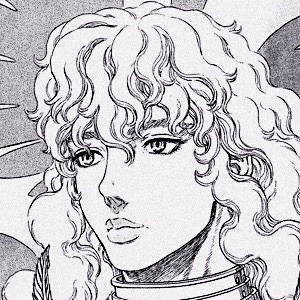

Guts
Guts, renowned as the "Black Swordsman", is a former mercenary and branded wanderer who travels the world

Casca
Casca is a former unit commander of the Band of the Falcon and an estranged companion of Guts.

Griffith
Griffith, renowned as the "White Falcon", is the leader of the reborn Band of the Falcon and Supreme Commander of the Midland.